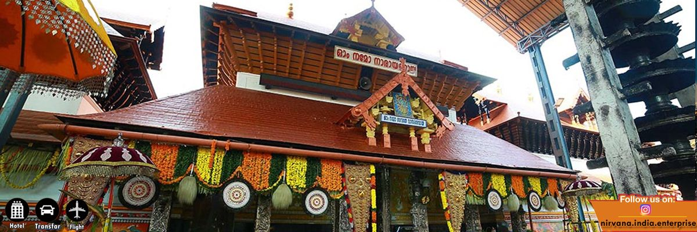

Kerala
Guruvayur: Dwarka of the South
Welcome to Guruvayur, the sacred Tirtha revered as the "Bhuloka Vaikuntha" (Heaven on Earth) and the Dwarka of the South. This holy town is home to the ancient and powerful temple of Lord Guruvayurappan, a captivating four-armed form of Lord Krishna. A pilgrimage here is an immersion into the vibrant and deeply devotional traditions of Kerala, where faith is a palpable, living force.
The Puranic Origin: The Divine Installation
Legend holds that the sacred idol of Guruvayurappan was originally worshipped by Lord Brahma himself. Foreseeing the end of his era, Brahma entrusted the idol to Guru (Brihaspati, the preceptor of the gods) and Vayu (the Wind God). He instructed them to find a new, sacred place on earth for its installation to bless humanity in the Kali Yuga. Guru and Vayu traveled south and found a beautiful lotus lake, where they were advised by Lord Shiva to consecrate the idol. The place thus came to be known as Guruvayur, from "Guru" and "Vayu."
Key Spiritual Experiences
Darshan of Guruvayurappan: The central experience is the powerful *darśana* of the small, radiant idol of Lord Guruvayurappan. Devotees often wait in long queues for a brief but deeply moving glimpse of the Lord, whose divine presence is said to heal both physical and spiritual ailments. The temple has a strict dress code (mundu for men, sari for women) that must be observed.
Thulabharam Offering: A unique and powerful ritual at Guruvayur is the *Thulabharam*, where a devotee weighs themselves against an offering of their choice (like bananas, jaggery, or coconuts). This act symbolizes the complete surrender of the self to the Lord, offering one's entire being in an act of profound humility.
Punnathur Kotta (Elephant Sanctuary): A visit to the Punnathur Kotta, the temple's elephant sanctuary, is a must. All the elephants here are offerings made by devotees to the Lord. Witnessing these majestic creatures, who are an integral part of the temple's daily rituals and festivals, is a unique and joyous experience.